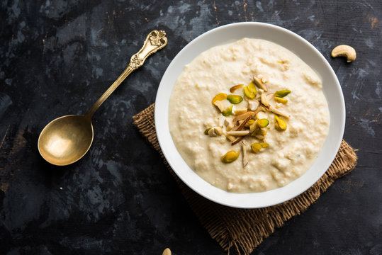

Kheer

Kheer, also known as payasam or payesh, is a beloved South Asian dessert that has delighted taste buds for generations. Let me share the delightful details of this creamy and sweet treat
The magic lies in the long, patient simmering process that transforms these humble ingredients into a rich and flavorful delight.
Ingredients
- Basmati Rice
- Whole Milk
- Sugar
- Ground Spices:Think saffron, cardamom, and sometimes nutmeg for that aromatic touch
- Nuts:
- Almonds
- Pistachios
- Cashews
Steps
- Wash the Basmati rice in water 2-3 times
- Soak the washed rice in water for 10-15 minutes
- Put the Instant Pot in sauté mode and add ½ cup water
- Once it’s hot, add the milk, soaked rice, and sugar. Stir well
- Close the Instant Pot lid and set it to Porridge mode
- Let it cook for 20 minutes
- Add cardamom powder and mix well
- Garnish with sliced cashews or blanched almonds